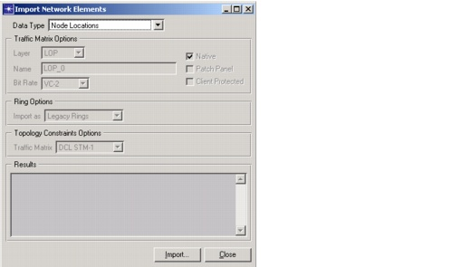

Importing and Exporting Data > Import Procedure
Import Procedure
Procedure 5-1 describes how to import data from external text files. For information about available file types and formats, see Data File Formats.
Procedure 5-1 Importing Network Data into a Project
- In SP Guru Transport Planner, choose File > Import > Network Elements.
The Import Network Elements dialog box appears.
Figure 5-2 Import Network Elements Dialog Box

- Select the type of data you want to import in the Data Type pull-down menu.
- You might need to specify additional options for some types of data:
- If you are importing connection or traffic data, specify the layer, name, bit rate, and other options.
- If you are importing rings, specify whether you want to import the rings as legacy, new, or candidate rings.
- If you are importing topology constraints, specify the traffic matrix to which they apply.
- Click the Import button to open the file browser and select the data file you want to import, then click OK in the file browser to confirm the file selection.
End of Procedure 5-1
| Home © 1987-2007 OPNET Technologies, Inc. All Rights Reserved. This software may be covered by one or more U.S. Patents. See complete patent notice in the Legal Notices section. OPNET Support Center |